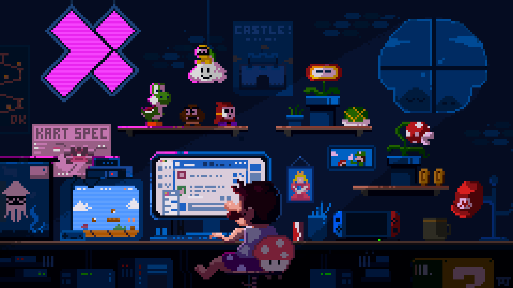
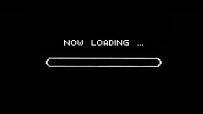
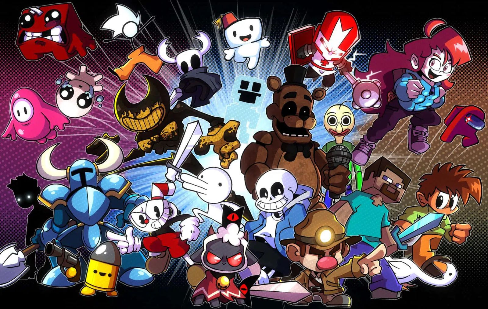

Información
Es una plataforma dedicada a descubrir los videojuegos más relevantes del momento, compartir los proyectos que estás desarrollando y explorar cómo otros creadores diseñan sus propios juegos. Además, permite colaborar con la comunidad, aportar sugerencias de mejora y realizar pruebas para identificar posibles fallos y optimizar la experiencia de cada videojuego.

Los videojuegos no son solo un objeto de distraccion muchos son una obra de arte, la cual el creador desea compartir con sus usuarios.

